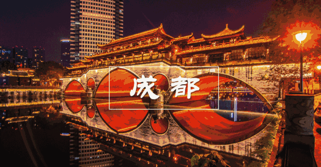

I BELIEVE YOU'RE HERE FOR SOMETHING LESS FORMAL —— CHENGDU
I BELIEVE YOU'RE HERE FOR SOMETHING LESS FORMAL —— CHENGDU
I BELIEVE YOU'RE HERE FOR SOMETHING LESS FORMAL —— CHENGDU
I BELIEVE YOU'RE HERE FOR SOMETHING LESS FORMAL —— CHENGDU成都
成都是一座泡在烟火里的天府之城，岷江滋养的平原孕育出它温润包容的底色，也藏着 “巴适” 到骨子里的生活哲学。这里既有武侯祠的三国风云、杜甫草堂的诗韵清雅，宽窄巷子的青瓦白墙间藏着老成都的市井肌理，锦里的红灯笼下飘着糖油果子的甜香；也有春熙路的潮流涌动、太古里的古今碰撞，IFS 爬墙熊猫成为城市最鲜活的打卡符号。火锅的热辣翻滚与盖碗茶的清冽回甘相映成趣，麻婆豆腐的鲜醇、夫妻肺片的香浓、蛋烘糕的软糯，构成刻在味蕾上的川味记忆。都江堰的千年智慧护佑着沃野千里，青城山的幽绿藏着道家禅意，而街头巷尾的麻将声、茶馆里的摆龙门阵，更将 “慢生活” 的真谛诠释得淋漓尽致。这座既有千年文脉沉淀，又不失现代活力的城市，用包容与惬意，让每个到来的人都能找到属于自己的舒适节奏。
没有人提到四川成都不会条件反射出“麻辣”二字：龙抄手、夫妻肺片、担担面……管你能不能吃辣，菜这么香，爽就是了。
